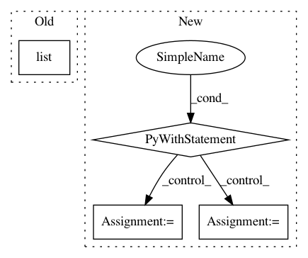

b2e6cccd53bd6c076c32421b8c4d562a96437524,tensorlayer/layers/normalization.py,LayerNormLayer,__init__,#LayerNormLayer#Any#Any#Any#Any#Any#Any#Any#Any#Any#Any#Any#,228
Before Change
variables = tf.get_collection(TF_GRAPHKEYS_VARIABLES, scope=vs.name)
self.all_layers = list(layer.all_layers)
self.all_params = list(layer.all_params)
self.all_drop = dict(layer.all_drop)
self.all_layers.extend([self.outputs])
self.all_params.extend(variables)
After Change
if tf.__version__ < "1.3":
// raise Exception("Please use TF 1.3+")
with tf.variable_scope(name) as vs:
self.outputs = tf.contrib.layers.layer_norm(
self.inputs,
center=center,
scale=scale,
activation_fn=act,
reuse=reuse,
variables_collections=variables_collections,
outputs_collections=outputs_collections,
trainable=trainable,
// begin_norm_axis=begin_norm_axis,
// begin_params_axis=begin_params_axis,
scope="var",
)
variables = tf.get_collection(TF_GRAPHKEYS_VARIABLES, scope=vs.name)
else:
with tf.variable_scope(name) as vs:
self.outputs = tf.contrib.layers.layer_norm(
self.inputs,
In pattern: SUPERPATTERN
Frequency: 3
Non-data size: 4
Instances
Project Name: tensorlayer/tensorlayer
Commit Name: b2e6cccd53bd6c076c32421b8c4d562a96437524
Time: 2018-03-10
Author: dhsig552@163.com
File Name: tensorlayer/layers/normalization.py
Class Name: LayerNormLayer
Method Name: __init__
Project Name: GPflow/GPflow
Commit Name: 5e599fb01df65d156a40f7a138ab6627a06a50db
Time: 2020-05-07
Author: 6815729+condnsdmatters@users.noreply.github.com
File Name: gpflow/optimizers/natgrad.py
Class Name: NaturalGradient
Method Name: _natgrad_steps
Project Name: GPflow/GPflow
Commit Name: b41d4f38436e4a090c940dbd3bc7e2afd39a283e
Time: 2020-04-23
Author: st--@users.noreply.github.com
File Name: gpflow/optimizers/natgrad.py
Class Name: NaturalGradient
Method Name: _natgrad_steps